The Fresco as Midrash
Frescoes on biblical subjects are arranged in three tiers on the walls of the synagogue.
Source: ja-tora.com (the article by Arie Olman). Translated from Russian.
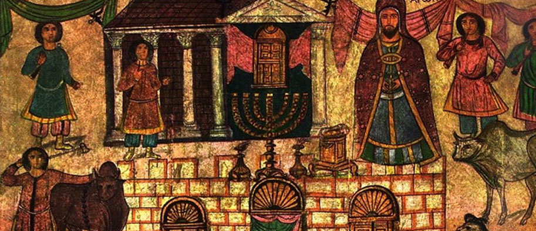
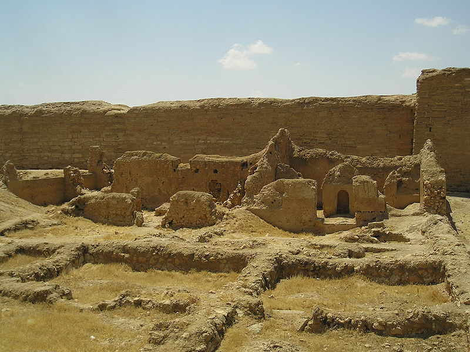
In 1932–1935, during the excavation of the Hellenistic city of Dura-Europos on the Euphrates, in present-day Syria, M. I. Rostovtzeff uncovered a well-preserved synagogue. The synagogue building was built in 244–245, as an Aramaic inscription found during the excavation shows. The building is about 7 metres high; the main hall measures 7.68 m by 13.35 m, and benches ran along its walls. In the western wall, facing Jerusalem, the traditional semicircular niche for keeping the Torah scrolls was found, with a raised platform in front of it.
The synagogue stood next to the city wall, and in 256, when fortifications were being built against the Sasanian army, its roof was removed and the building was filled with sand. This is what preserved its famous frescoes, since after the Sasanians captured the city it was abandoned.
Frescoes on biblical subjects are arranged in three tiers on the walls of the synagogue. There are many of them: four scenes from the life of Moshe, scenes from the lives of Yaakov, Aharon, Shmuel, David and Shlomo, of the prophets Eliyahu and Yechezkel, and of Esther, as well as the exodus of the Jews from Egypt, the crossing of the Sea of Suf and the ark of the covenant. These frescoes are extremely interesting to art historians, and they are also remarkable in that they calmly break the well-known Jewish prohibition on depicting human beings: evidently in Dura-Europos it was interpreted differently. But another aspect of these frescoes interests us: their exact content. Not only the text of the Tanakh lies behind them! In some frescoes we recognise stories from the midrashim, and since no midrashim were written down before the 5th century, we have before us their earliest record.
The Israeli scholar Yael Mali distinguishes the following kinds of midrashic content in the frescoes:
- illustrations of a midrash;
- the use of pagan symbols for Jewish purposes;
- compositional allusions.
Let us turn to examples.
1. An illustration of a well-known midrash can be seen in the frescoes showing the contest between the prophet Eliyahu and the priests of Baal on Mount Carmel (1 Kings 18).
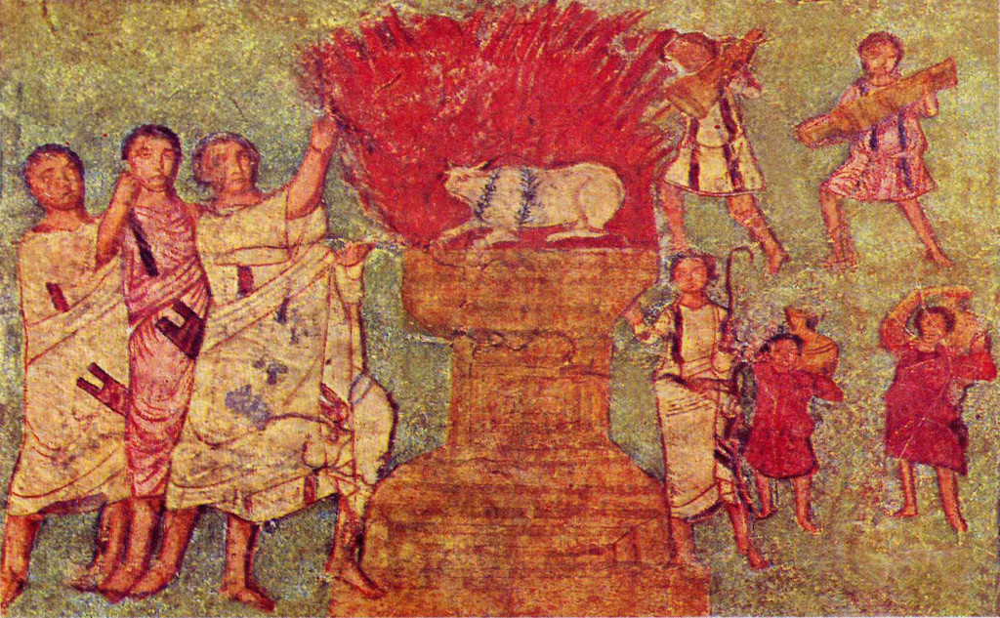
Here the priests of Baal leap and dance, trying to call down fire, but only the prophet Eliyahu succeeds. Notice the Greek clothes of all the figures: historicism in art is still far off. The figure of Eliyahu was important to the members of the synagogue, since it symbolised both the fight against idolatry and the hope of future redemption. And another fresco has an interesting detail.
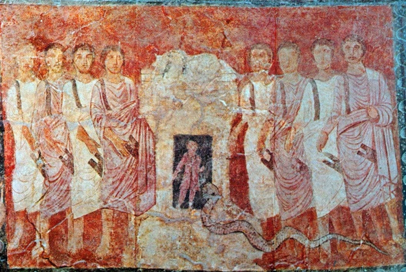
Inside the altar sits a small man, and next to him a snake. What is this?
"Hiel made the altar hollow; they put him inside and said to him: When you hear our cries, strike fire and kindle it from within. But the Holy One, blessed be He, sent a snake; it bit him and he died" (Yalkut Shimoni, 1 Kings 18).
The midrash Yalkut Shimoni is a late collection of midrashim that preserves many ancient traditions whose direct sources have been lost.
2. Here is a depiction of the Jews crossing the sea:
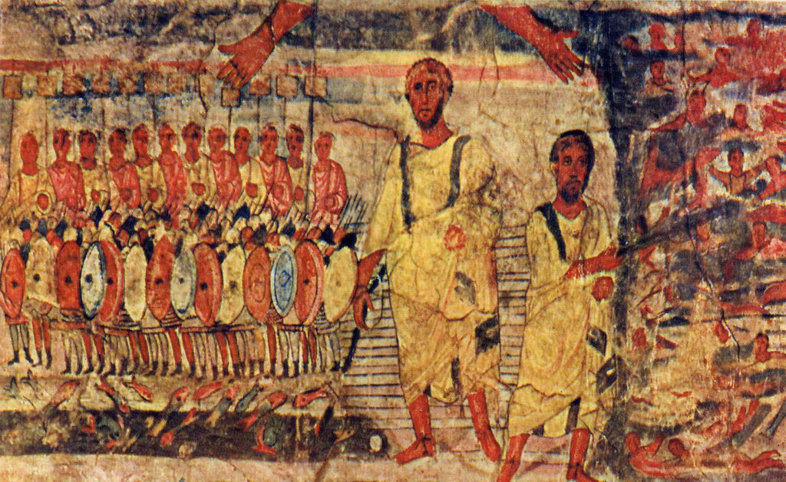
At the top there are apparently two hands of God, which is interesting in itself. But why do they point in different directions, one towards the Jews and the other towards the Egyptians?
"Rabbi Abahu said: It is like a man who was walking with his son and suddenly saw robbers. What did he do? He took his son in one hand and fought the robbers with the other. His son said to him: Father, may these two hands never leave me, the one that holds me and the other that kills the robbers! So the Jews said to the Holy One, blessed be He: Peace be with both Your hands, the one that saved us from the sea and the one that overthrew the Egyptians" (Shemot Rabbah 22:2).
3. The Jews went out of Egypt "chamushim" (Exod. 13:18). What does this unique word mean? "Armed," says the Mekhilta of Rabbi Shimon bar Yochai (on Exod. 13:18). And in our fresco we see armed Jews crossing the sea; but they did not have to fight: the Most High fought for them.
4. The midrashim speak of the miraculous well of Miriam that accompanied the Jews on their wanderings in the wilderness. When the tribes of Israel encamped and the tabernacle stopped, the rock with the miraculous well appeared in the court of the tabernacle, and the heads of the tribes came to it and called out: "Spring up, O well" (Num. 21:17) (Bemidbar Rabbah 1:2). A stream flowed from the well to each tribe (Tosefta Sukkah 3:3). This is how it is shown in the fresco.
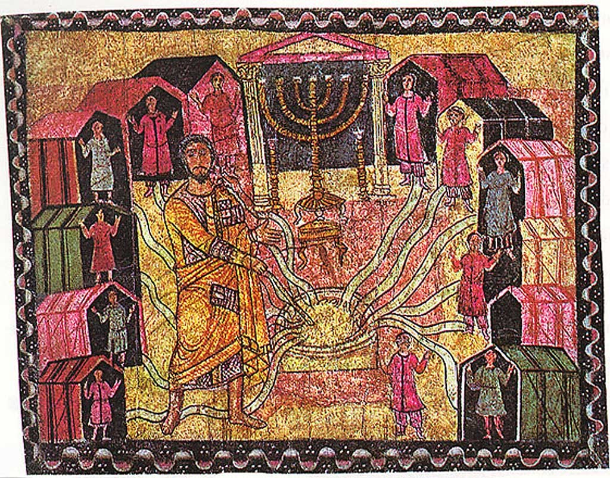
5. To bring the baby Moshe out of the Nile, Pharaoh's daughter "sent" something there called "amah" (Exod. 2:5). But this word has two meanings:
"Rabbi Yehudah and Rabbi Nechemyah disputed: one said it was a hand, the other said it was a maidservant" (Sotah 12b).
The fresco supports one of the positions in the dispute:
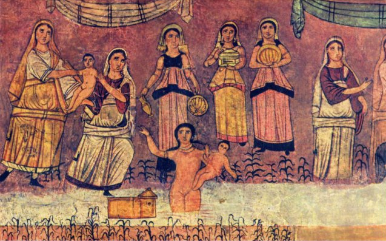
Which one? Do not hurry to answer; first think: why is the woman who draws Moshe out (he is shown twice) naked? Here is why:
"It is written: 'And the daughter of Pharaoh came down to wash herself at the river' (Exod. 2:5), and Rabbi Yochanan said: to wash herself of the idolatry of her father's house" (Megillah 13a).
In the view of the midrashim, Pharaoh's daughter converted to Judaism, which requires immersion in a natural spring. So it is not a maidservant holding little Moshe but Pharaoh's daughter herself; it was she who "sent her hand".
6. In the fresco showing Achashverosh, Haman and Mordechai, Haman (second from the left) is shown in strange clothing:
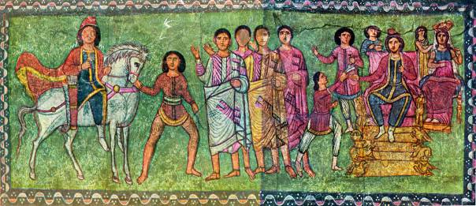
This is not fitting for the first nobleman of the kingdom. But the point is that, according to the midrash, Haman had once been a barber and even Mordechai's slave (Megillah 16a).
Besides this, in this fresco King Achashverosh sits on the famous throne of Shlomo from the midrashim, on whose steps stood golden animals that moved as if alive. But not quite on that throne:
"Rabbi Kohen said in the name of Rabbi Azaryah: He wanted to sit on the throne of Shlomo, but the animals did not allow him, saying to him: a king who is not a kosmokrator (ruler of the world) may not sit on it. So he made himself a copy of it" (Esther Rabbah 1:12).
7. An example of the use of pagan symbols. Above the niche for the ark, among other things, David is shown playing the lyre. He is dressed in the robes of Persian kings, but for some reason in a Phrygian cap, with animals and birds beside him. Everything is familiar and seemly. But notice his pose:
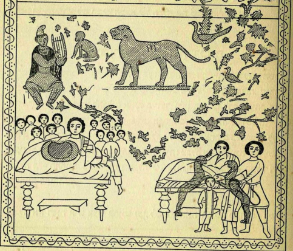
And compare it with this:
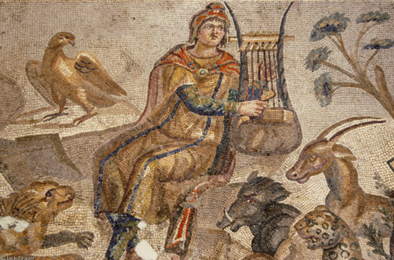
It is Orpheus, enchanting the animals with his singing. The Phrygian cap is his attribute. And here is another Orpheus, from Sicily of the same period (2nd–3rd centuries):
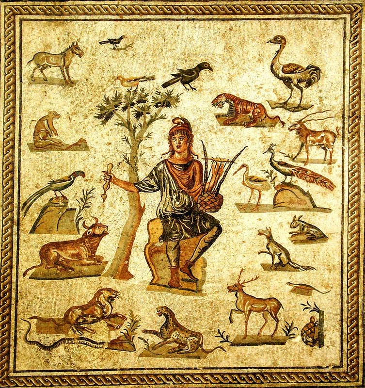
David and Orpheus are both shepherds, both play the lyre, both are extremely important figures for their cultures. The beasts of prey beside David as he plays are an echo of the well-known prophecy about the times of his descendant, the Mashiach (Messiah): "The wolf also shall dwell with the lamb" (Isa. 11:6). The fresco in the synagogue speaks to its members in a visual language they understand.
And one more David-Orpheus, from the synagogue in Gaza:
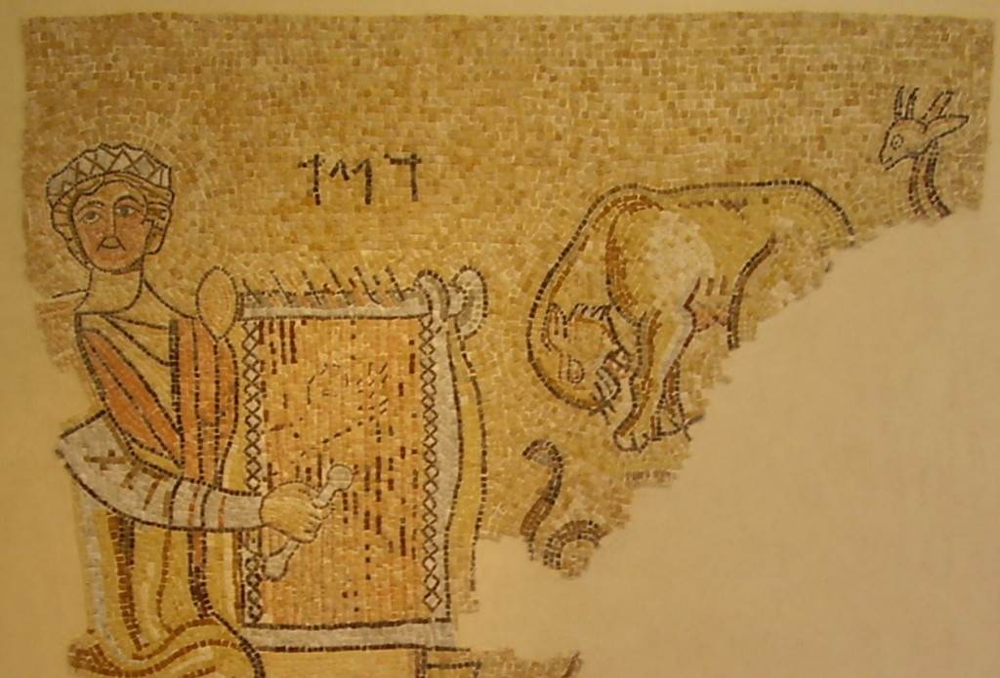
Only here he is also something of a Byzantine emperor. Compare him with the image of Justinian in the church of San Vitale:
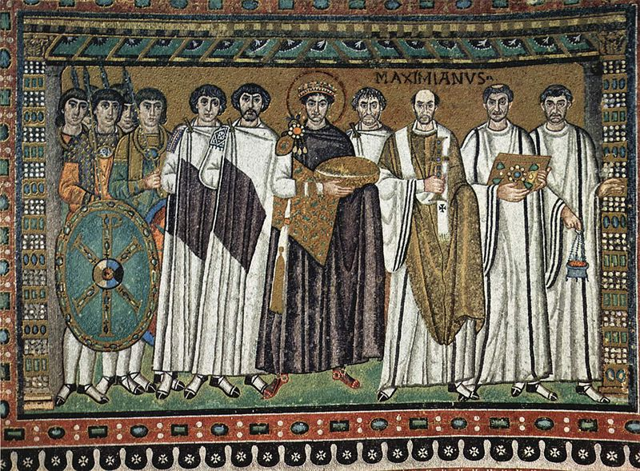
8. In the fresco below, David is shown at the moment of his anointing, dressed in the imperial Byzantine purple:
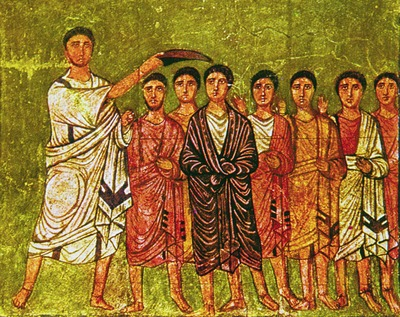
This fresco also contains a compositional allusion. The prophet Shmuel is shown much taller than King David. Why? Is it not because, as some scholars suggest, the head of the synagogue in Dura-Europos was Shmuel ha-Kohen, the work was directed by Shmuel ben Safra, and the elder of the community was Shmuel ben Idi?
In the frescoes of Dura-Europos one can also see a reflection of the political disputes of the time and of the debate with Christianity, but we shall leave these subjects outside the scope of this article.
 Awake, North Wind! (Song of Songs 4:16)
Awake, North Wind! (Song of Songs 4:16) The Exodus Is About Us
The Exodus Is About Us A House Made of Words: 10 Facts About One Synagogue
A House Made of Words: 10 Facts About One Synagogue